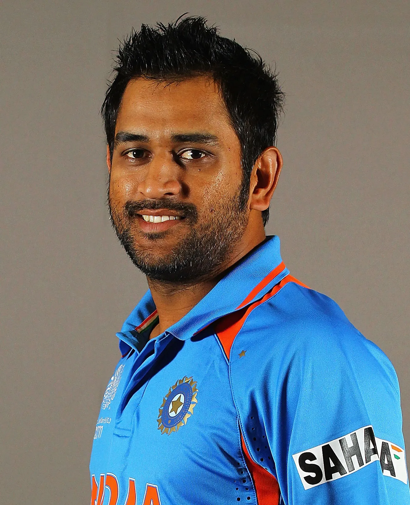

WELCOME TO INDIAN CRICKET TEAM
CLICK ON IMAGE EAH IMAGE IF YOU WANT MORE INFORMATION
BEST PLAYER IN INDAIAN CRICKET TEAM
- SACHIN TENDULAKAR
- MS DHONI
- RAHUL DRAVID
- VIRAT KOHLI
- ROHIT SHARMA
- KAPIL DEV
- VIRENDER SHEWAG
- SKY
SACHIN TENDULKAR
Sachin Ramesh Tendulkar BR (/ˌsʌtʃɪn tɛnˈduːlkər/ (listen); pronounced [sət͡ʃin t̪eːɳɖulkəɾ]; born 24 April
1973)
is an Indian former international cricketer who captained the Indian national team. He is regarded as one of the
greatest batsmen in the history of cricket.[4] He is the all-time highest run-scorer in both ODI and Test
cricket with more than 18000 runs and 15000 runs respectively in total.[5] He also holds the record for
receiving the most man-of-the-match awards in international cricket.[6] Known for his large fanbase and
described by ESPNcricinfo as 'the most worshipped player in the world',[7] Tendulkar is sometimes referred to as
"The God of Cricket" in India. A film with that name was released in 2021.[8]
Tendulkar took up cricket at the age of eleven, made his Test match debut on 15 November 1989 against Pakistan
in Karachi at the age of sixteen, and went on to represent Mumbai domestically and India internationally for
close to twenty-four years. In 2002, halfway through his career, Wisden ranked him the second-greatest Test
batsman of all time, behind Don Bradman, and the second-greatest ODI batsman of all time, behind Viv
Richards.[9] Later in his career, Tendulkar was part of the Indian team that won the 2011 Cricket World Cup, his
first win in six World Cup appearances for India.[10] He had previously been named "Player of the Tournament" at
the 2003 edition of the tournament.
Tendulkar received the Arjuna Award in 1994 for his outstanding sporting achievements, the Khel Ratna Award,
India's highest sporting honour, in 1997, and the Padma Shri and Padma Vibhushan awards in 1999 and 2008,
respectively, two of India's highest civilian awards.[11][12] A few hours after the end of his last match in
November 2013, the Prime Minister's Office announced the decision to award him the Bharat Ratna, India's highest
civilian award.[13][14] As of 2021, he is the youngest recipient to date and was the first sportsperson to
receive the award.[15][16] In 2012, Tendulkar was nominated to the Rajya Sabha, the upper house of the
Parliament of India.
MS DHONI

Mahendra Singh Dhoni (/məˈheɪndrə ˈsɪŋ dhæˈnɪ/ (listen); born 7 July 1981), commonly known as MS Dhoni, is a
former Indian cricketer and captain of the Indian national team in limited-overs formats from 2007 to 2017, and
in Test cricket from 2008 to 2014. He is also the current captain of Chennai Super Kings in the Indian Premier
League. Under his captaincy, India won the 2007 ICC World Twenty20, the 2011 Cricket World Cup, and the 2013 ICC
Champions Trophy, the most by any captain. He also led India to victory in the 2010 and 2016 Asia Cup.
Additionally, under his leadership, India won the 2010 and 2011 ICC Test Mace. Dhoni is a right-handed
wicket-keeper batsman known for his aggressive captaincy and his ability to finish matches in tight situations.
He scored over 10,000 runs in One Day Internationals and is considered one of the best finishers in the game. He
is also one of the greatest wicket-keepers and captains in the history of cricket.
In Indian domestic cricket he played for Bihar and Jharkhand Cricket team. He is the captain of Chennai Super
Kings (CSK) in the Indian Premier League. He captained the side to championships in the 2010, 2011, 2018 and
2021 editions of IPL league. Also under his captaincy Chennai Super Kings (CSK) Won Champions League T20 two
times, in 2010 and 2014.
RAHUL DRAVID

Rahul Sharad Dravid (/ˌrɑːhʊl drəvɪd/ (listen); born 11 January 1973) is an Indian cricket coach and former
captain of the Indian national team, currently serving as its head coach. Prior to his appointment to the senior
men's national team, Dravid was the Head of Cricket at the National Cricket Academy (NCA), and the head coach of
the India Under-19 and India A teams. Under his tutelage, the under-19 team finished runners up at the 2016 U-19
Cricket World Cup and won the 2018 U-19 Cricket World Cup. Known for his sound batting technique,[2] Dravid
scored 24,177 runs in international cricket and is widely regarded as one of the greatest batsmen in the history
of cricket.[3][4][5] He is colloquially known as Mr. Dependable and often referred to as The Wall.[6]
Born in a Marathi family and raised in Bangalore, he started playing cricket at the age of 12 and later
represented Karnataka at the under-15, under-17 and under-19 levels. Dravid was named one of the best five
cricketers of the year by Wisden Cricketers' Almanack in 2000 and received the Player of the Year and the Test
Player of the Year awards at the inaugural ICC awards ceremony in 2004.[7][8] In December 2011, he became the
first non-Australian cricketer to deliver the Bradman Oration in Canberra.
VIRAT KOHLI

Virat Kohli (Hindi pronunciation: [ʋɪˈɾɑːʈ ˈkoːɦli] (listen); born 5 November 1988) is an Indian international
Virat Kohli (Hindi pronunciation: [ʋɪˈɾɑːʈ ˈkoːɦli] (listen); born 5 November 1988) is an Indian international
cricketer and former captain of the Indian national team. He is widely regarded as one of the greatest batsmen
of all time in international cricket.[3] Kohli plays as a right-handed batsman for Royal Challengers Bangalore
in the IPL and for Delhi in Indian domestic cricket. He holds the record for scoring most runs in both T20
internationals and in IPL. In 2020, the International Cricket Council named him as player of decade. Kohli has
won Man of the Tournament award twice at the ICC World Twenty20, in 2014 and 2016. Playing for his franchise in
IPL, he won the Orange Cap and Most-valuable Player Award in 2016 season. Furthermore has won most player of the
match and series awards in T20I. With 40 wins in 68 Test matches, he is India's most successful Test captain.
Kohli has also contributed to India's successes, including winning the 2011 World Cup and the 2013 Champions
trophy.
Born and raised in Delhi, Kohli trained in West Delhi Cricket Academy; started his youth career with Delhi
Under-15 team. Kohli made his international debut in 2008 and quickly became a key player in the ODI team. He
made his Test debut in 2011.[4] In 2013, Kohli reached the number one spot in the ICC rankings for ODI batsmen
for the first time.[5] During 2014 T20 World Cup, he set a record for the most runs scored in the tournament. In
2018, Kohli became the number one ranked Test batsman, making him the only Indian batsman to achieve the top
spot in the ICC rankings in all three formats. His form continued in 2019, where he became the first player to
score 20,000 international runs in single decade. In 2021, Virat Kohli made the decision to step down as the
captain of the Indian national team for T20Is, following the T20 World Cup and in early 2022 he stepped down as
the captain of the Test team as well.
ROHIT SHARMA

Rohit Gurunath Sharma (born 30 April 1987) is an Indian international cricketer and the current captain of the
Indian cricket team. Considered as one of the best opening batters of all time,[2] Rohit is known for his
timing, elegance, six-hiting abilities and leadership skills. He plays as a right-handed batsman for India
national cricket team in international cricket, Mumbai Indians in IPL and for Mumbai in domestic cricket. Rohit
also captains Mumbai Indians and the team has won 5 titles under his leadership, the most by any team.
Sharma currently holds the world record for the highest individual score (264) in a One Day International (ODI)
match and is the only player to have scored three double-centuries in ODIs and also holds the record for scoring
most hundreds (five) in a single Cricket World Cup, for which he won the ICC Men's ODI Cricketer of the Year
award in 2019. Sharma has received two national honours, the Arjuna Award in 2015 and the prestigious Major
Dhyan Chand Khel Ratna in 2020.
KAPIL DEV

Kapil Dev Ramlal Nikhanj (Pronunciation: [kəpiːl deːʋ]; born 6 January 1959) is an Indian former cricketer. He
was a fast-medium bowler and a hard-hitting middle-order batsman, and was named by Wisden as the Indian
Cricketer of the Century in 2002.
Dev captained the Indian cricket team that won the 1983 Cricket World Cup,[4] and in the process became the
first Indian captain to win the Cricket World Cup, and is still the youngest captain (at the age of 24) to win
the World Cup for any team.[5] He retired in 1994, at the times of holding the world record for the highest
number of wickets taken in Test cricket, a record subsequently broken by Courtney Walsh in 2000.[6] At the time,
he was also India's highest wicket-taker in both major forms of cricket, Tests and ODIs. He is the first player
to take 200 ODI wickets.[7] He is the only player in the history of cricket to have taken more than 400 wickets
(434 wickets) and scored more than 5,000 runs in Tests,[8] making him one of the greatest all-rounders in the
history of cricket.[9] Dev's all-round performance has been praised by cricketers including Sunil Gavaskar who
regards him as one of the greatest all-rounders to play the game.[10] He was the coach of the Indian national
team between September 1999 and September 2000.[11] On 11 March 2010, Dev was inducted into the ICC Cricket Hall
of Fame.[12] In 1982 awarded with the Padma Shri and in 1991 the Padma Bhushan.
VIREDDER SHEWAG

Virender Sehwag pronunciation (help·info) (born 20 October 1978) is a former Indian cricketer who represented
India from 1999 to 2013. Widely regarded as one of the most destructive opener,[1] he played for Delhi Capitals
in IPL and Delhi and Haryana in Indian domestic cricket. He played his first One Day International in 1999 and
joined the Indian test side in 2001.[2][unreliable source?]In April 2009, Sehwag became the first Indian to be
honoured as the Wisden Leading Cricketer in the World for his performance in 2008,[3] subsequently becoming the
first player of any nationality to retain the award for 2009.[4] He worked as stand-in captain occasionally
during absence of main captain of India, also worked as Vice-Captain for Indian squad. He is former captain of
Delhi Daredevils and Delhi Ranji Team.
Sehwag holds multiple records including the highest score made by an Indian in Test cricket (319 against South
Africa at M. A. Chidambaram Stadium in Chennai), which was also the fastest triple century in the history of
international cricket (reached 300 off only 278 balls) as well as the fastest 250 by any batsman (in 207 balls
against Sri Lanka on 3 December 2009 at the Brabourne Stadium in Mumbai). Sehwag also holds the distinction of
being one of four batsmen in the world to have ever surpassed 300 twice in Test cricket.[5] In March 2009,
Sehwag smashed what was till then the fastest century ever scored by an Indian in ODI cricket, from 60 balls.[6]
On 8 December 2011, he hit his maiden double century in ODI cricket, against West Indies, becoming the second
batsman after Sachin Tendulkar to reach the landmark.[7] His score became the highest individual score in ODI
cricket—219 off 149 balls which was later bettered by Rohit Sharma—264 off 173 balls on 13 November
2014.[8][9][10] He is one of only two players in the world to score a double hundred in ODI and a triple hundred
in Test Cricket, the other being Chris Gayle.[11]
SKY
Suryakumar Ashok Yadav (born 14 September 1990) is an Indian international cricketer who plays for the Indian
cricket team. He plays as a right handed batsman for Mumbai Indians in the Indian Premier League and for the
Mumbai cricket team in Indian domestic cricket. He is regarded as one of the best T20I cricketers in modern
cricket.
Yadav has drawn comparisons to AB de Villiers, often considered as one of the greatest batsmen of all time.[3]
As of 1 November 2022, Yadav was ranked as the number one T20 International batsman in the world surpassing both
Babar Azam and Muhammed Rizwan, who strike at higher 120s. Meanwhile, Surya Yadav strikes at 180 while also
having an average of 46.[4][5][a]
He captained Mumbai cricket team in T20 and First-class cricket for brief period of time, since 2010.[7][5]
He is a right-handed middle order batter and a part-time right-arm spin bowler.[8] He made his T20I debut for
India on 14 March 2021 against England. He made his One Day International (ODI) debut for India on 18 July 2021
against Sri Lanka.[9]
Thanks for visiting our website